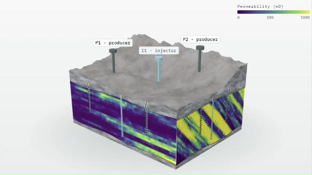

Background
Decisions in an oil or gas field, such as where to drill, how much water to inject or what production to expect, rely on a computer model of the reservoir. But the rock lies kilometres below the surface and is sampled only where wells are drilled. Geologists can therefore propose several different but equally reasonable interpretations, called conceptual models: channels may run in one direction or another, and a fault may or may not seal.
As the field produces, measured rates and pressures are used to update the models, a process known as history matching. The difficulty is that very different models can match the same measurements equally well. A good fit is evidence, but not proof. This raises a practical question: are the production data informative enough to discriminate between the conceptual models, or is that simply not possible with the data we have?
Our approach
We combine fast data assimilation with statistical model comparison. Instead of re-running an expensive flow simulator for every update, we use data-space inversion, which updates the predicted production data directly. A neural-network autoencoder compresses each production curve into a few numbers that are easier to handle statistically. Together, these make it possible to condition and compare many geological concepts on standard computing hardware, in hours rather than weeks or months.
- Which model predicts best? Posterior predictive criteria rank the conditioned models by how well they predict data they have not seen (leave-one-out cross-validation), and Bayesian stacking combines them with weights instead of betting on a single model.
- Can the data tell them apart? Before any updating, a separability diagnostic based on the Wasserstein distance measures how different the models' predicted responses are, and shows in advance whether a confident ranking is possible.
- How much time does it save? A full model comparison that would need about two weeks (2D case) to two and a half months (3D Drogon field) of simulation was completed in a few hours.
Results and applications
In a blind benchmark, where the true model was kept hidden until the end, the method identified the correct geological concept. On the Drogon field, a realistic 3D benchmark released by Equinor, the diagnostic correctly warned beforehand that ten alternative models could not be told apart with the available data. In that situation the right step is to collect different data, such as a longer production history, other well controls or new types of measurement. Because the diagnostic is cheap, such options can be screened before money is spent on acquiring them.
The methods support reservoir management and forecasting with honest uncertainty, and apply equally to other subsurface problems such as CO2 storage.